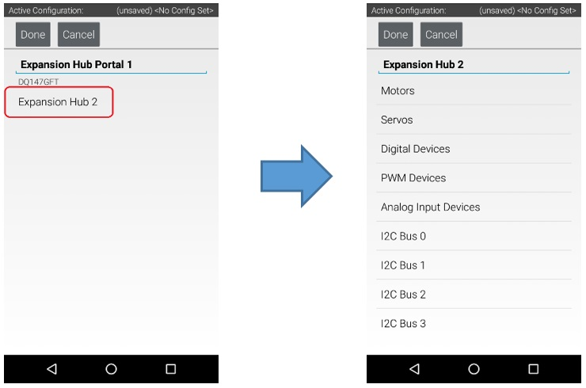
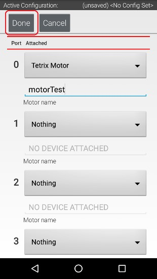
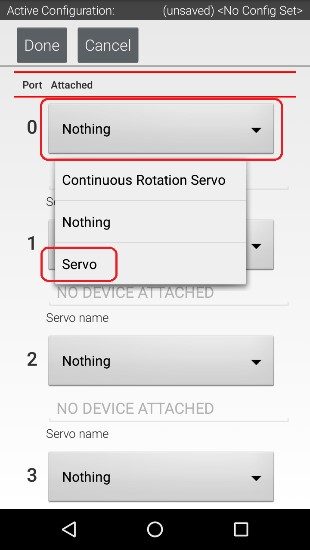
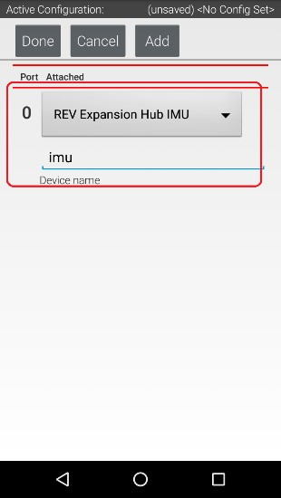
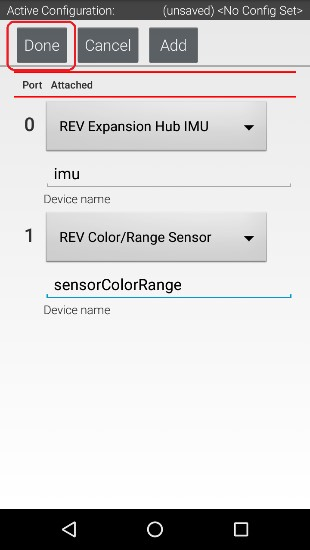
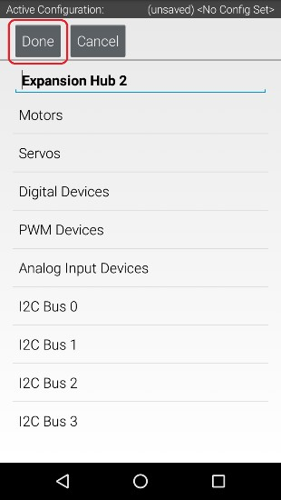
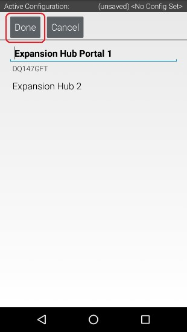

PHONE-CONFIGURATION PAGE
- Established: MHS 2017 - This is a phone setup & configuration page for teaching new programmers. Large portions of text, & the majority of phone screenshots come from the official FTC Wiki: FTC WIKI
USING THE DRIVER-STATION
Driver Station Screen
The Cyan Circle shows the extra settings menu The Red Circle shows the autonomous selection menu The Green Circle shows the teleop selection menu
Extra Settings Menu
Settings, Restart Robot, Configure Robot, Program & Manage, Self Inspect, About, Exit Details explained below.
Select Autonomous
Select which program you would like to run.
Select TeleOp
Select which program you would like to run.
ANDROID PHONE SETUP
This guide will help you setup your Android Devices.
Renaming Your Smartphones
You will need to have two FIRST-approved Android smartphones for the control system. One phone will be used as the Robot Controller, the other will be used as the Driver Station. By establishing unique names for your phones, you can ensure that your phones will be communicating with each other rather than other teams’ phones at meets and tournaments. The official rules of the FIRST Tech Challenge require that you change the Wi-Fi name of your smartphones to include your team number and “-RC” if the phone is a Robot Controller or “-DS” if it is a Driver Station. A team can insert an additional dash and a letter (“A”, “B”, “C”, etc.) if the team has more than one set of Android phones. If, for example, a team has a team number of 9999 and the team has multiple sets of phones, the team might decide to name one phone “9999-C-RC” for the Robot Controller and the other phone “9999-C-DS” for the Driver Station. The “-C” indicates that these devices belong to the third set of phones for this team. Note that it will take an estimated 5 minutes per phone to complete this task.
1. Using the Android App Drawer, locate the "Settings" icon. Click on "Settings" icon to display the Settings screen.
2. Click on "Wi-Fi" to launch the Wi-Fi screen.
3. Touch the three vertical dots to display a pop-up menu.
4. Select "Advanced" from the pop-up menu.
5. Select "Wi-Fi Direct" from the Advanced Wi-Fi screen.

6. Touch the three vertical dots to display a pop-up menu.
7. Select Configure Device from the pop-up menu.
8. Use touch pad to enter new name of device.
If the device will be a Robot Controller, specify your team number and "-RC". If the device will be a Driver Station, specify your team number and "-DS". You can also set the Wi-Fi Direct inactivity timeout to "Never disconnect" and then hit the "SAVE" button to save your changes. Note that in the screenshot shown in step 8, the team number is “9999”. The “-C” indicates that this is from the third pair of smartphones for this team. The “-RC” indicates that this phone will be a Robot Controller. 9. After renaming the phone, power cycle the device.
Installing the FTC Apps
The FTC apps are available to download for free from the Google Play store. You will need to have your Android phones connected to a Wi-Fi network that has Internet access before you can access the Google Play store. You will also need a Google account to be able to download the apps from the Google Play store. Note that it will take an estimated 7.5 minutes per phone to complete this task.
1. From the Android Wi-Fi screen look for the name of your wireless network (“CE_NET” in this example) and touch the wireless network name to login to the network.
2. Specify the password using the touch keypad and hit CONNECT to connect to this wireless network.
3. Find the Google Play Store icon on your phone and click it to launch the Google Play Store app.
4. If you haven’t signed into your Google account yet, follow the onscreen instructions to log into your Google account. If you don’t have a Google account, follow the onscreen instructions create a new account.
5. In the search window of the Google Play app, type in the words “FTC Robot Controller” to find the Robot Controller or “FTC Driver Station” to find the appropriate FTC app for your phone.
6. Tap on the app in the Google Play listing to bring up the installation screen. Follow the onscreen instructions to install the appropriate app for your phone.
Important note: When you install the FTC apps, only install one FTC app (FTC Robot Controller or FTC Driver Station) per phone. You should avoid installing both apps onto the same phone. Doing so can cause Wi-Fi connection problems. You should only install the FTC Robot Controller app onto the phone that will be the Robot Controller and the FTC Driver Station app onto the phone that will be the Driver Station.
7. After you have successfully installed the app, you shouldforget the external wireless network on your phone.Go to the Android Wi-Fi screen, find the name of the currently connected network, and tap on the network name to bring up a pop-up box with info about the network.
8. Click on the "FORGET" button to forget the wireless network.
Placing Phones into Airplane Mode with Wi-Fi On
For the FIRST Tech Challenge competitions, it is important that you place your Robot Controller and Driver Station phones into Airplane mode but keep their Wi-Fi radios turned on. This is important because you do not want any of the cellular telephone functions to be enabled during a match. The cellular telephone functions could disrupt the function of the robot during a match. Note that the screens displayed on your Android Devices might differ slightly from the images and it will take an estimated 2.5 minutes per phone to complete this task.

1. On the main Android screen of each smartphone, use your finger to slide from the top of the screen down towards the bottom of the screen to display the quick configuration screen. Note that for some smartphones you might have to swipe down more than once to display the quick configuration screen, particularly if there are messages or notifications displayed at the top of your screen. Look for the Airplane mode icon (which is shaped like an airplane) and if the icon is not activated, touch the icon to put the phone into airplane mode.

2. Placing the phone into airplane mode will turn off the Wi-Fi radio. If the Wi-Fi icon has a diagonal line through it (see Step 1 above), then the Wi-Fi radio is disabled. You will need to touch the “Wi-Fi” icon on the quick configuration screen to turn the Wi-Fi radio back on.
Pairing the Driver Station to the Robot Controller
Once you have successfully installed the FTC apps onto your Android phones, you will want to establish a secure wireless connection between the two devices. This connection will allow your Driver Station phone to select op modes on your Robot Controller phone and send gamepad input to these programs. Likewise, it will allow your op modes running on your Robot Controller phone to send telemetry data to your Driver Station phone where it can be displayed for your drivers. The process to connect the two phones is known as “pairing.” Note that it will take an estimated 10 minutes to complete this task.
1. Using the Android App Drawer, locate the "FTC Robot Controller" icon. Tap on the icon to launch the Robot Controller app.
2. Verify that the Robot Controller app is running. The "Robot Status" field should read “running” if it is working properly.
3. Using the Android App Drawer, locate the "FTC Driver Station" icon. Tap on the icon to launch the Driver Station app.
4. Touch the three vertical dots on the upper right hand corner of the main screen of the FTC Driver Station app. This will launch a pop-up menu.
5. Select Settings from the pop-up menu.
6. From the Settings screen, look for and select “Connect with Robot Controller” to launch the Connect with Robot Controller screen.
7. Find the name of your Robot Controller from the list and select it.After you have made your selection, use the back-arrow key to return to the Settings screen. Then press the back-arrow key one more time to return to the main Driver Station screen.
8. When the Driver Station returns to its main screen, the first time you attempt to connect to the Robot Controller a prompt should appear on the Robot Controller screen. Click on the “ACCEPT” button to accept the connection request from the Driver Station.
9. Verify that the Driver Station screen has changed and that it now indicates that it is connected to the Robot Controller. The name of the Robot Controller’s remote network (“9999-C-RC” in this example) should be displayed in the Network field on the Driver Station.
10. Verify that the Robot Controller screen has changed and that it now indicates that it is connected to the Driver Station. The Network status should read “active, connected” on the Robot Controller’s main screen.
Enabling Developer Mode
After you have configured your Android phone, you will also have to make sure that your phone is in developer mode. Enable the Developer Options and USB debugging before you install apps onto the phone using the tools that are included with Android Studio. Go to Settings > About phone on the phone, and then tap the Build number seven times. When you first connect a phone to your computer with Android Studio running, the phone might prompt you if it is OK to allow the computer to have USB debugging access to the phone. If this happens, make sure that you check the “Always allow from this computer” option and hit the OK button to allow USB debugging. The Android Developer website contains information on how to enable Developer Options onto android phones. https://developer.android.com/studio/run/device.html#device-developer-options
HARDWARE CONFIGURATION
Configuring the Robot Phone
Before you can communicate with the motor, servo and sensors that are connected to the Expansion Hub, you first must create a configuration file on your Robot Controller smartphone, so that the Robot Controller will know what hardware is available on the Expansion Hub. Note that it will take an estimated 20 minutes to create the configuration file, configure a motor, configure a servo, and configure the color and touch sensors.
Creating a Configuration File:
To start, you will need to create a configuration file on the Robot Controller:
1. Power on the Expansion Hub by turning on the power switch.
2. Plug the Type B Mini end of the USB cable into the USB mini port on the Expansion Hub.

3. Plug the Type A end of the USB cable into the OTG adapter.

4. Verify that your Robot Controller smartphone is powered on and unlocked. Plug in the USB Micro OTG adapter into the OTG port of the Robot Controller phone. Note that when the OTG adapter is plugged into the smartphone, the phone will detect the presence of the Expansion Hub and launch the Robot Controller app.
5. The first time you connect the Robot Controller smartphone to the Expansion Hub, the Android operating system should prompt you to ask if it is OK to associate the newly detected USB device (which is the Expansion Hub) with the FTC Robot Controller app.
6. Touch the three vertical dots in the upper right hand corner of the Robot Controller. This will launch a pop-up menu.
"Important Information!" You might be prompted multiple times to associate the USB hardware with the FTC Robot Controller. Whenever you are prompted by your phone with this message, you should always select the “Use by default for this USB device” option and hit the “OK” button to associate the USB device with the FTC Robot Controller app. If you fail to make this association, then the Robot Controller app might not reliably connect to this Expansion Hub the next time you turn your system on.
7. Select Configure Robot from the pop up menu to display the Configuration screen.
8. If your Robot Controller does not have any existing configuration files, the screen will display a message indicating that you need to create a file before proceeding. Hit the “New” button to create a new configuration file for your Robot Controller.
9. When the new configuration screen appears, the Robot Controller app will do a scan of the USB bus to see what devices are connected to the phone.
It will display the devices that it found in a list underneath the words “USB Devices in configuration.” You should see an entry that says something like “Expansion Hub Portal 1” in the list. Your Expansion Hub is listed as a Portal because it is directly connected to the Robot Controller phone through the USB cable. If you do not see your Expansion Hub Portal listed, check the wired connections and then press the Scan button one or two times to see if the phone detects the device on a re-scan of the USB bus.
10. Touch the Portal listing (“Expansion Hub Portal 1” in this example) to display what Expansion Hubs are connected through this Portal. Since we only have a single Expansion Hub connected, we should only see a single Expansion Hub configured (“Expansion Hub 2” in this example).

11. Touch the Expansion Hub listing (“Expansion Hub 2” in this example) to display the Input/Output ports for that device. The screen should change and list all the motor, servo and sensor ports that are available on the selected Expansion Hub.
Configuring a DC Motor:
Now that you've created a file, you will need to add a DC Motor to the configuration file. Important note: At this point, although you have created your configuration file, you have not yet saved its contents to the robot controller, you will save the configuration file in a later step.

1. Touch the word "Motors" on the screen to display the Motor Configuration screen.

2. Since we installed our motor onto port #0 of the Expansion Hub, use the dropdown control for port 0 to select the motor type (Tetrix Motor for this example).

3. Use the touch screen keypad to specify a name for your motor (“motorTest” in this example).

4. Press the Done button to complete the motor configuration. The app should return to the previous screen.
Configuring a Servo:
You will also want to add a servo to the configuration file. In this example, you are using a standard 180-degree servo.

1. Touch on the word Servos on the screen to display the Servo Configuration screen.

2. Use the dropdown control to select “Servo” as the servo type for port #0.

3. Use the touch pad to specify the name of the servo (“servoTest” for this example) for port #0.
4. Press the Done button to complete the servo configuration. The app should return to the previous screen.
Configuring a Color Distance Sensor:
The REV Robotics Color Distance Sensor is an I2C sensor. It actually combines two sensor functions into a single device. It is a color sensor, that can determine the color of an object. It is also a distance or range sensor, that can be used to measure short range distances. Note that in this tutorial, the word "distance" is used interchangeably with the word "range". The built-in IMU is internally connected to I2C Bus 0 on each Expansion Hub. Whenever you configure an Expansion Hub using the Robot Controller, the app automatically configures the IMU for I2C Bus 0. You will need to add another I2C device for this bus to be able to configure the color sensor.

1. Touch the words I2C Bus 0 on the screen to launch the I2C configuration screen for this I2C bus. The Expansion Hub has four independent I2C buses, labeled “0” through “3”. In this example, since you connected the Color Sensor to the port labeled “0”, it resides on I2C Bus 0.

2. Look at the I2C Bus 0 screen. There should already be a sensor configured for this bus. The Expansion Hub has its own built-in inertial measurement unit (IMU) sensor. This sensor can be used to determine the orientation of a robot, as well as measure the accelerations on a robot.

3. Press the Add button to add another I2C device to this bus.

4. Select “REV Color/Range Sensor” from the dropdown selector for this new device. Use the touchscreen keyboard to name this device “sensorColorRange”.

5. Press the Done button to complete the I2C sensor configuration. The app should return to the previous screen.
Configuring a Digital Touch Sensor:
The REV Robotics Touch Sensor is a digital device. The Touch Sensor is HIGH (returns TRUE) when it is not pressed. It is pulled LOW (returns FALSE) when it is pressed. Notice that we are configuring the Touch Sensor on port #1 instead of port #0. This is because when the REV Robotics Touch Sensor is connected to a digital port using a standard 4-wire JST sensor cable, it is the second digital pin that is connected. The first pin remains disconnected.

1. Touch the words Digital Devices on the screen to launch the Digital I/O configuration screen.
2. Use the touch screen to add a “Digital Device” for port #1 and name the device “digitalTouch”.
3. Press the Done button to return to the previous screen.
Saving the Configuration Information:
Once you have configured your hardware, you must save the information to the configuration file. If you do not save this information, it will be lost and the robot controller will be unable to communicate with your hardware.

1. Press the Done button to go up one level in the configuration screens.

2. Press the Done button again to return to the highest level in the configuration screens.
3. Press the Save button.
4. When prompted, specify a configuration file name using the touchscreen’s keypad (use “TestConfig” for this example).
5. Press the OK button to save your configuration information using that file name.
6. After the configuration file has been saved, touch the Android back-arrow button to return to the main screen of the app.
7. Verify that the configuration file is the active configuration file on the main Robot Controller screen.